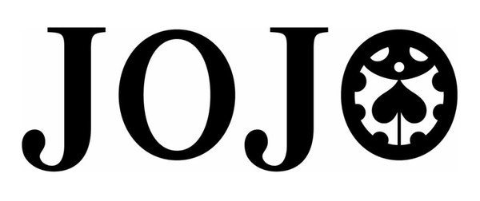

Protagonistas
Jonathan Joestar

Jonathan Joestar (ジョナサン・ジョースター,, jonasan jōsutā?) es el protagonista del primer arco argumental de JoJo's Bizarre Adventure, "Phantom Blood".
Siendo hijo del aristócrata George Joestar I, Jonathan es amable, honesto y positivo. Su vida llena de alegría cambió a la llegada de Dio Brando, su nuevo hermano adoptivo.
Josheph Joestar

JoJo era un joven de 18 años, muy grande y musculoso, su abuela Erina lo había criado desde bebé.
Pero JoJo no era un chico normal, él tenía un ingenio y astucia anormalmente grandes además de que poseía la habilidad del Hamon desde muy pequeño,
heredada de su abuelo Jonathan Joestar.
Jotaro Joestar

Jotaro Kujo (空条 承太郎 kūjō jōtarō) es un personaje ficticio y el protagonista del tercer arco de JoJo's Bizarre Adventure, Stardust Crusaders.
También haciendo apariciones en posteriores arcos, como Diamond is Unbrekeable y Stone Ocean. Es el hijo de Holy Joestar y el padre de Jolyne Cujoh (protagonista de la parte 6).
Josuke Higashikata

Josuke es un estudiante de preparatoria que reside en Morioh. Debuta en el volumen 29
(volumen 1 de Diamond Is Unbreakable) donde es buscado por Jotaro Kujo en nombre de Joseph Joestar
por tener relación con la Familia Joestar, ya que Josuke es el hijo ilegítimo de Joseph.
Giorno Giovanna

Giorno Giovanna (ジョルノ・ジョバァーナ, Joruno Jobāna?) es el protagonista principal de la Parte 5:
Vento Aureo (Golden Wind).
Es el primer hijo ilegítimo de DIO (el cual fue concebido con el cuerpo robado de Jonathan Joestar)
en aparecer en el manga y en la posterior adaptación anime. Anteriormente es introducido como
Haruno Shiobana (汐華 初流乃,?), un adolescente mitad japonés que vive en Italia.
Habla de su intención de unirse a la banda de Passione y su sueño de convertirse en un "Gang-Star"
(combinación de "Gángster" y "Superstar").